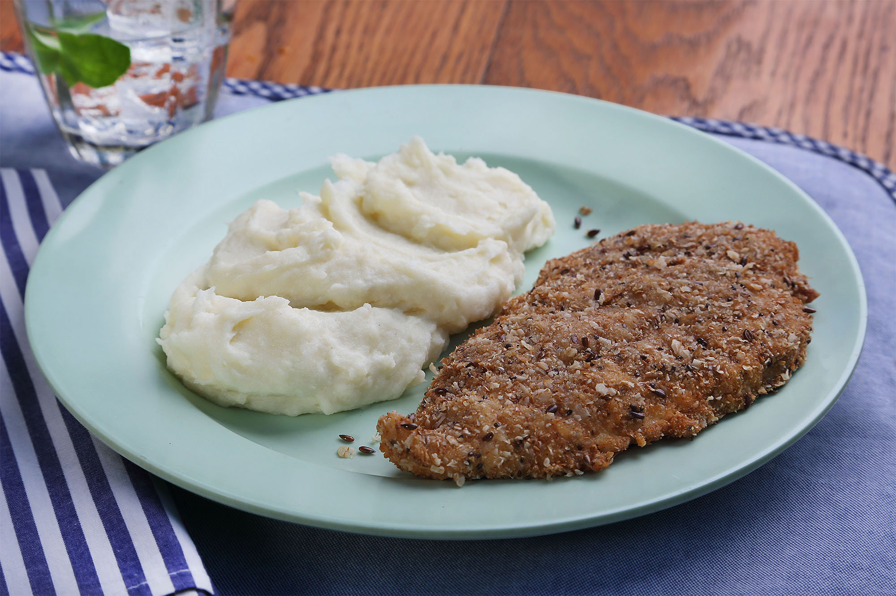

Milanesas con pure

Una milanesita lista para morfar!
Lo que necesitas:
- Una milanesa, de carne o de pollo, a esta ultima tambien se la conoce como suprema
- un kilo de papas, o una calabaza anco en el caso de que quieras hacer pure de zapallo
Los pasos a seguir:
- Pasar la milanesa por pan rallado, despues por huevo
- Al horno se ha dicho
- Paralelamente cortar las papas y meterlas en agua hirviendo, tambien podes agregar un poco de leche
- Una vez que la papa termine de chupar toda el agua, listo ese masacote gomoso es lo que se conoce como pure
- A manyar!!!